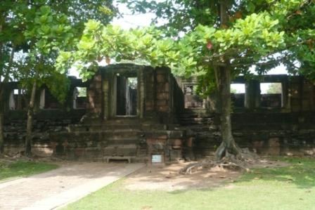

|  | คลังเงิน หรือธรรมศาลา หรือพลับพลาเปลื้องเครื่องตั้งอยู่ทางด้านซ้ายมือเมื่อหันหน้าเข้าสู่ถนน เป็นอาคารรูปสี่เหลี่ยมผืนผ้าขนาดกว้าง 26 เมตร ยาว 35.10 เมตร มีบันได และประตูเข้าสู่อาคารอยู่ตรงกลางทั้งทางด้านตะวันออกและตะวันตก โดยด้านทิศตะวันออกก่อเป็นมุขยื่นออกมา ในขณะที่ด้านหลังคือด้านทิศตะวันตกเจาะเป็นช่องประตูเรียบ ๆ ทั้งสองข้างประตูค่อนไปชิดมุมอาคารทำเป็นประตูหลอกข้างละ 1 ประตู ผนังด้านทิศตะวันออกและทิศใต้เจาะช่องหน้าต่างเป็นระยะ ๆ ส่วนด้านอื่น ๆ ปิดทึบ (กรมศิลปากร, 2531: 32) ภายในอาคารทำเป็นห้องยาวคล้ายระเบียงทางเดินต่อเนื่องกันโดยรอบตรงกลางของระเบียงด้านทิศตะวันออกและตะวันตกเชื่อมต่อกันโดยกั้นเป็นห้องยาวตลอดแนว โดยแบ่งเป็น 3 ห้อง ห้องกลางมีขนาดใหญ่ที่สุด ทุกห้องมีประตูทะลุถึงกัน ในระหว่างการขุดแต่งเมื่อ พ.ศ. 2511 พบโบราณวัตถุจำนวนมากและมีทั้งรูปเคารพและเครื่องประดับ ซึ่งอาคารหลังนี้คงจะสร้างขึ้นในราวพุทธศตวรรษที่ 17 โดยเปรียบเทียบลักษณะทางศิลปะของภาพสลักบนทับหลังที่พบ(จรรยา มาณะวิท และระวิวรรณ บุญญศาสตร์พันธุ์, 2542: 24 ; กรมศิลปากร, 2552: 29-31) |